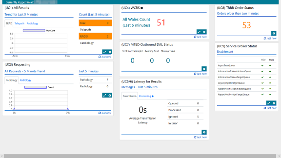

My Projects
Multi-Function Terminal
Essentially this is a custom Web browser application based on the latest .NET Framework and WebView2, but it is configurable by the persons administrating the terminal and is designed to run on remotely-managed client machines.
Technical Debt and Legacy Software
Essentially making sure that software is more secure, robust, maintainable and documented.
Wake On LAN Portal
This is a Web portal that enables members of an organisation to wake on-premise computers, so they become accessible over Remote Desktop. This is based .NET Core 6, and is a more maintainable, secure and documented replacement for a legacy system.
Security Testing Application Toolset
An ongoing project to develop an automated security testing framework.
Clinical Messaging Support Dashboard
The Support Dashboard is a clinical system monitoring framework to show the real-time status of messaging between a number of clinical systems. Though based on ASP.NET, it made heavy use of stored procedures, front-end code for rendering charts and custom interface extensions to be highly configurable.

Validation Dictionary
Developing an ASP.NET MVC implementation of a legacy clinical reference software application, replicating the interface layout and all the features.
Reference Data Service
The Reference Data Service maintains a repository of collated and validated clinical reference data used by healthcare professionals. It is used also as a reference by external healthcare systems.
At the core, the interface is an ASP.NET MVC application, consisting primarily of front-end code, and incorporating Web Forms, in-house role-based authentication system, DataTables and TinyMCE.
Clinical Messaging Web Services and Web APIs
Addition and maintenance of Web Services and Web APIs to support the messaging for clinical test requesting and reporting systems.
The API repository is a .asmx file containing all the entry points for our collection of Web services. The Web Services were implemented by helper methods, which performed SQL queries and remote procedure calls, and returned the data in JSON format.
Test Automation
Using Microsoft’s Coded UI framework, I was able to vastly reduce the time required to complete functional regression testing of large applications, and develop a system to enable better management, versioning and maintainability of test scripts.
IPv6Secure
Working title: Secure IPv6 Communications Across Multiple Untrusted Networks. This was my dissertation project at the University of South Wales, and it outlined a design for a secure communications protocol that is resilient against traffic interception and filtering,leveraging features native to IPv6.